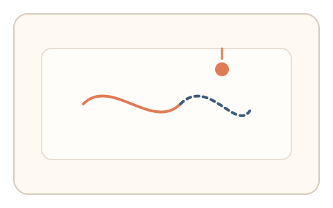
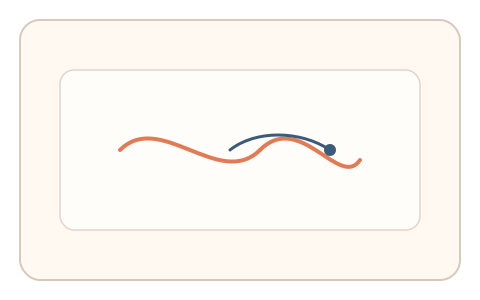

#106
Morphological Analysis - Combination Batches
已扩展
暂留拼合‑预测误差
两段图形快速交替后消失，用户预测缺失段位置并轻描，以预测误差与一致性验证真实性。
概念原文
两段图形快速交替后消失，用户预测缺失段位置并轻描，系统评估预测误差与任务内一致性。任务结构为多阶段，信号形态为预测误差与轨迹动力学。
以“时域整合 + 预测误差”作为验证组合。
研究背景
视觉暂留会在短时间内整合交替刺激，用户的补全预测会呈现稳定的误差分布。脚本难以在时域整合与预测误差上保持人类特征。
核心机制
- 两段图形快速交替呈现后消失。
- 用户预测缺失段位置并轻描。
- 记录预测误差与路径曲率。
- 与任务内一致性进行比较。
用户流程
- 步骤 1：用户看到交替闪现的图形片段。
- 步骤 2：图形消失后用户轻描缺失段。
- 步骤 3：系统计算预测误差并判定。
判定信号
预测误差分布
人类补全存在稳定的误差范围。
路径曲率与停顿
真实用户补全会出现自然的曲率与微停顿。
判定逻辑
误差分布与路径形态需落在人类区间；过度精确或过度平滑判异常。
对抗面
- 脚本直接计算缺失段并描绘
- 重放真实用户的补全轨迹
防御与缓解
- 随机化交替片段与节奏
- 加入轻微噪声降低模板化
- 叠加反应时与抖动信号
可达性与风险
提供更慢闪现与替代任务，避免对视觉敏感用户造成压力。
- 闪现过快导致真实用户补全困难
- 设备刷新率影响暂留效果
可视化状态

状态 1：交替片段
两段图形快速交替呈现。

状态 2：预测补全
用户轻描缺失段。

状态 3：误差判定
根据预测误差与路径判定。
参考资料
Persistence of vision
说明视觉暂留与时域整合。
Predictive coding
说明预测误差与感知补全机制。